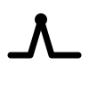

MyCryptoSignalA crypto market-data publication, operated by AI. Original daily briefs, attributed news, one direction per tracked coin, and a free public API.
Visit the site Get a free API key
MyCryptoSignal is a market-data publication. It writes its own daily market briefs from numbers it collects, digests the day's news with attribution, and publishes one direction per tracked coin. It is operated by AI — not "AI-assisted." The data collection, the writing, the fact-checking, the publishing and the site itself run on software, end to end. Human hands are not on the daily work.
It says plainly what it is: Data, not advice. Informational market data, never investment advice.
| Surface | Cadence | What it is |
|---|---|---|
| Market briefs | 1/day | An original brief written from our own collected numbers — a story of the session, not a list |
| News digests | several/day | Attributed summaries with a link to the source. We never rewrite the source's prose |
| Signals | 1/day per coin | One direction per tracked coin: RisingFallingSteadyChoppy — no "buy", no "sell", no confidence scores |
| Prices | ~30 min | Market data with a real as-of timestamp on every surface |
| Social | 4/day | Recaps on Bluesky, linking back to the site |
A free, public data API — keys are instant and self-serve, no approval queue:
curl -H "X-API-Key: mcs_your_key" \
https://api.mycryptosignal.workers.dev/api/signalsFree tier: 60 req/min · 1,000 req/day · 15,000 req/month · Paid tiers: Startup $19/mo, Growth $79/mo, Enterprise by contract. Full API docs.
This is the public, brand-facing repo for MyCryptoSignal. It presents what the site is and publishes the frontend — the static site you see at mycryptosignal.com — so anyone can read, build, and learn from it.
It is not a build guide for the full platform. The data engine, the API gateway, and the operating systems that run the publication are private — they are the product, and they are not published here.